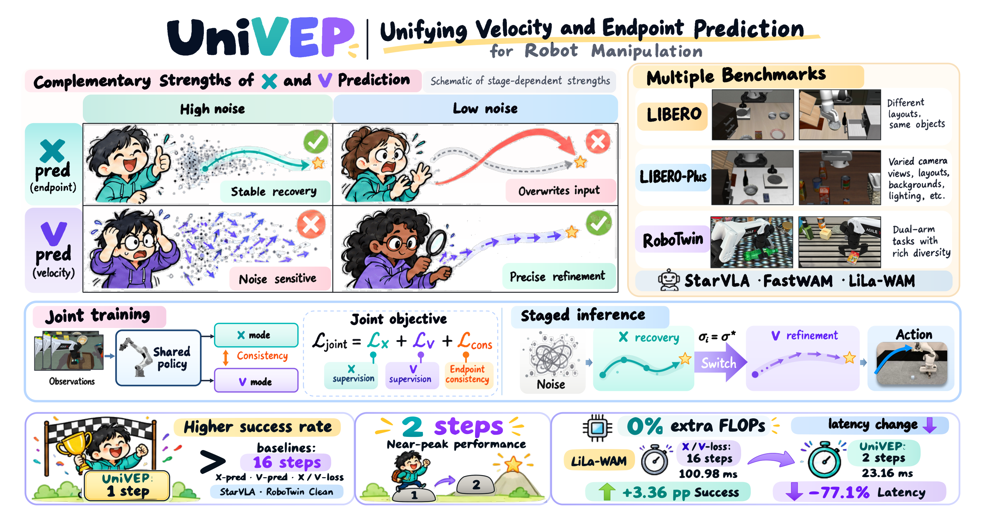
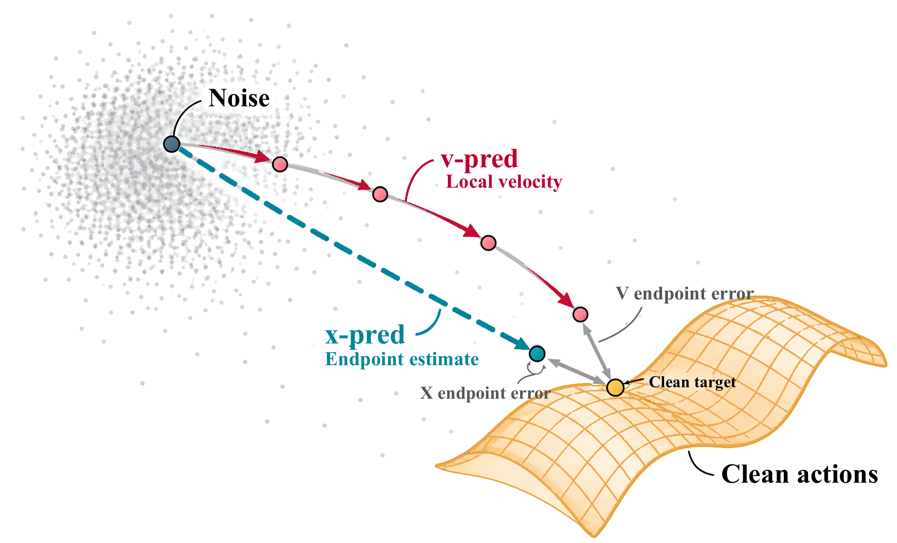
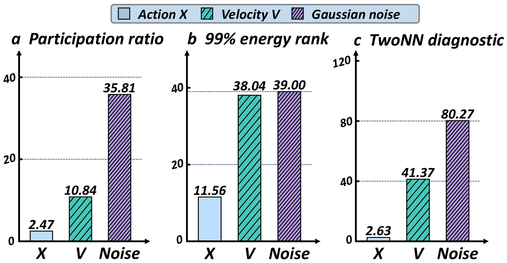
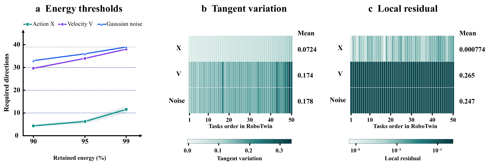
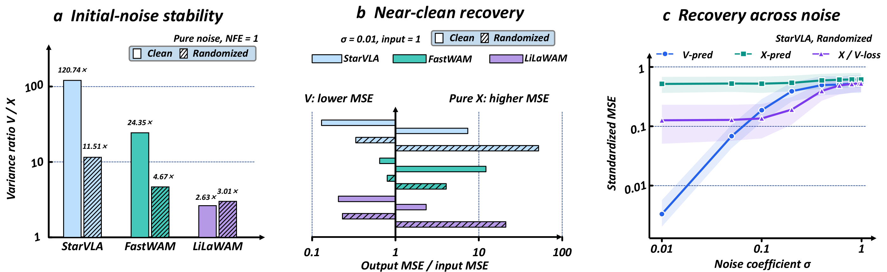
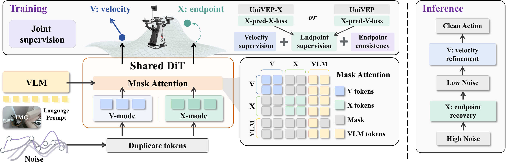

Predict the endpoint
X-prediction estimates the complete clean action chunk. The sampler uses this endpoint estimate to move the current noisy action toward it.
1 The Hong Kong University of Science and Technology (Guangzhou)
2 Beijing Jiaotong University 3 Shenzhen University


Prediction targets
A generative policy turns Gaussian noise into an action chunk, conditioned on observations, language, and robot state. What should its action network predict along that path?
X-prediction estimates the complete clean action chunk. The sampler uses this endpoint estimate to move the current noisy action toward it.
V-prediction estimates the velocity along the noise-to-action path. The sampler integrates these local directions over successive evaluations.
t runs from noise to clean action; σ = 1 − t is the remaining noise. Here velocity describes generation, rather than the robot’s physical joint speed.

The study compares V, X, and X–V. X–V predicts the same endpoint as X and uses the same inference update; its training loss emphasizes low-noise endpoint errors with the weight 1/max(σ, 0.05)². This lets us separate the network’s output from the space in which it is supervised.
Across 50 RoboTwin tasks, clean action chunks concentrate their variation in fewer directions than velocity targets or Gaussian noise. Their mean participation ratio is 2.47, compared with 10.84 for velocity and 35.81 for noise.


Performance across inference budgets
Algebraically related predictions need not learn equally well. We first compare V, X, and X–V under matched training within each policy, then vary the number of network evaluations.
Mean success across 50 tasks · the same trained weights at every budget
Hover or tap a point for exact values. Select a legend item to isolate a target. Focus a chart and use the left and right arrow keys to inspect budgets.
1–2 evaluations
With one evaluation, X–V reaches these success rates on RoboTwin Clean. It also leads V and X at two evaluations in both policies.
1 to 16 evaluations
35.92% → 53.84%
StarVLA’s success with V rises by 17.92 percentage points. Direct X moves from 40.52% to 42.52%. At eight evaluations, LiLa-WAM V and X–V reach 82.84% and 82.56%.
| Policy | V | X | X–V |
|---|---|---|---|
| StarVLA | 35.92 | 40.52 | 55.56 |
| LiLa-WAM Full | 67.40 | 73.36 | 80.12 |
FastWAM’s velocity-pretrained configuration favors V at its native ten-call budget: 73.24% success, compared with 65.88% for X and 34.20% for X–V. Resetting only the action expert raises X–V to 64.48%, while V remains strongest at 71.56%. The pretrained video pathway is retained.
These native-budget runs use separate rollouts from the inference-budget sweep. Within each policy, architecture, data, and update budgets are matched. On RoboTwin, StarVLA and FastWAM use 50 Clean demonstrations per task; LiLa-WAM Full uses 50 Clean + 500 Randomized demonstrations.
Could the gaps come from what each target predicts well at different levels of noise?
Prediction behavior across noise stages
The task-success curves suggest different strengths. We probe predictions at matched observations and noise levels to distinguish recovering an action from noise from refining one that is already nearly correct.

High noise
120.74×
On StarVLA Clean, endpoints reconstructed from V have 120.74 times the variance of X-predicted endpoints. X is more stable across all six policy and split settings.
Near-clean actions
0.334×
On StarVLA Randomized at σ = 0.01, V leaves 0.334 times the input mean squared error. Pure X leaves 52.1 times the input error.
The remaining noise σ scales the velocity prediction error. As σ approaches zero, that error has a smaller effect on the reconstructed endpoint. The low-noise comparison above uses Pure X, with direct endpoint supervision.
Each probe uses one network evaluation, with conditions and checkpoints fixed. The study uses 2,004 matched observation anchors across 12 tasks per split and eight matched noise draws per anchor, on Clean and Randomized scenes for StarVLA, FastWAM, and LiLa-WAM Full. It measures endpoint variance and reconstruction error; the preceding budget sweep measures closed-loop task success.
This suggests using X to recover the action from heavy noise, then V to refine it near the endpoint.
From the observations to a policy
UniVEP brings endpoint and velocity prediction into a shared action network. Training supervises both modes; each inference step evaluates the mode selected for the current noise level.

A mode embedding selects X or V in the shared network. Both see the same noisy action, noise level, and policy conditions. Velocity and endpoint regression train each output; consistency aligns the endpoint predicted by X with the endpoint reconstructed from V.
UniVEP uses a bounded velocity-weighted endpoint loss. UniVEP–X uses a flat endpoint loss; both retain velocity supervision and the same consistency objective. The weighting interacts with FastWAM’s velocity-pretrained components.
σ ≥ σ*: select the endpoint mode.
On the native grids, both one- and two-call inference use X only. Their gains come from joint training. At larger budgets, later evaluations can use V, depending on the policy’s time grid.
Evaluating the joint policy
We now evaluate the jointly trained policy on the same manipulation benchmarks and inference budgets.
Above sixteen-call X–V at 59.96% on RoboTwin Clean.
Above sixteen-call X–V at 82.60% on RoboTwin Clean.
Each policy at its native budget · success (%)
Within-policy controls: architecture, training data, and update budget are fixed. StarVLA and FastWAM use 50 Clean demonstrations per task; LiLa-WAM Full uses 50 Clean + 500 Randomized demonstrations. Mean ± SD is shown where the main table reports three training seeds. The native-budget table and the NFE sweep report comparisons within each policy.
Comparisons are controlled within each policy. LiLa-WAM Full uses Randomized training demonstrations; StarVLA evaluates Randomized scenes using a Clean-trained policy. Standard LIBERO is near saturation, and FastWAM’s velocity-pretrained configuration remains an important exception.
On the real robot
A multitask StarVLA policy controls a 14-DoF ARX A7 with an egocentric RealSense D405 camera. All recipes use the same four-call controller and 50 evaluation trials per task.
Mean real-robot success
+9.3 pp over the strongest single-target baseline
The largest gain is on Drawer Cube Place: 38% to 52%. Grab Stick improves from 76% to 84%, and Pick Two Cube from 34% to 40%.
50 demonstrations per task · 20,000 joint updates · four Euler steps / four network calls · same action interface and controller.
| Recipe | Drawer Cube Place | Pick Two Cube | Grab Stick | Mean |
|---|---|---|---|---|
| V | 24 | 32 | 38 | 31.33 |
| X | 34 | 34 | 46 | 38.00 |
| X–V | 38 | 34 | 76 | 49.33 |
| UniVEP | 52 | 40 | 84 | 58.67 |
StarVLA · four calls per action chunk · 50 trials per task
Inference efficiency
At matched policy and NFE, each step evaluates one mode and retains the counted inference FLOPs of a single-target policy. The larger wall-clock savings come from generating effective actions with fewer calls.
LiLa-WAM Full · RoboTwin Clean
Higher success and 77.1% lower latency than the strongest sixteen-step single-target baseline.
Batch 1 · single RTX 4090 · latency through delivery of a complete action chunk to the CPU. At matched policy and NFE, counted inference FLOPs are unchanged. Joint training has separate training cost.
The same comparison holds for StarVLA: one-call UniVEP reaches 61.36% success at 61.59 ms, versus 59.96% at 191.32 ms for sixteen-call X–V, a 67.8% latency reduction.
Latency is measured through delivery of a complete action chunk to the CPU, at batch size one on an RTX 4090, after 20 warm-up calls and over 300 synchronized timings. Counted FLOPs cover dominant matrix multiplications, convolutions, and attention operations.
The inference statement is separate from training. In the measured StarVLA setup, joint training adds 6.93% counted training FLOPs and 15.57% per-update time.
Resources
Find complete benchmark results, ablations, noise-probe measurements, training details, and compute accounting in the paper.
Read the full paper@misc{liang2026univep,
title = {UniVEP: Unifying Velocity and Endpoint Prediction
for Robot Manipulation},
author = {Liang, Zhengtu and Liang, Qiwei and Lin, Tao and
Weng, Shihang and Cai, Boyang and Chen, Xiangyu and
Chen, Yikeng and Liang, Jiaming and Tan, Bohan and
Yan, Yu and Xu, Renjing},
year = {2026},
eprint = {2611.26103},
archivePrefix = {arXiv},
url = {https://arxiv.org/abs/2611.26103}
}